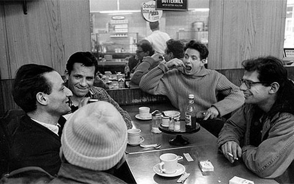

Tom is about more than just HTML, CSS and IT Infrastructure. Keep reading to learn about Tom's interests outside of technology.
Sports


I've been a sports fan all my life. I played soccer and basketball in grade school, and have skied, hiked and played pickup basketball as an adult. I follow all the local sports teams, but would say that football is my primary interest. I can't seem to remember html syntax from one week to the next, but can vividly recall Steve Largent's hit on Mike Harden in 1988. Sad but true...
Weather
I've been interested in the weather since I was a kid. I like pretty much any anomalous or extreme weather. I've learned to read weather maps and weather models just well enough to understand if it's likely to snow at my house. I've also read a lot about historical weather events in the Puget Sound region, some of which I experienced first hand, and some of which were before my time.
Books and Literature

I've always like to read. It's something my Mom instilled in me at a young age, and something I tried to pass along to my kids. I tend to gravitate toward the tortured artist and/or cultural rebel type of author. I've read a lot of Jack Kerouac, Ken Kesey and Hunter S. Thompson, read Kerouac's collection of letters, and have always had an interest in the details of their lives. I've read and enjoyed many other types of fiction an non-fiction as well. I've found that being able to write clearly and persuasively is a critical and somewhat uncommon skill in Information Technology, and I'm convinced that my interest in reading has helped me greatly in that area.
Music
Like many people, my taste in music is tied to the time of my youth. Led Zeppelin was at their peak when I was in high school, and I thought they were the four coolest guys on the face of the earth. The Grateful Dead was also big during that time, although they were less mainstream. In the 80's I discovered bands like the Talking Heads, and in the early 90's I listened to most of the Seattle Grunge bands, with Soundgarden being my personal favorite. For the most part, this is the music I still listen to today.